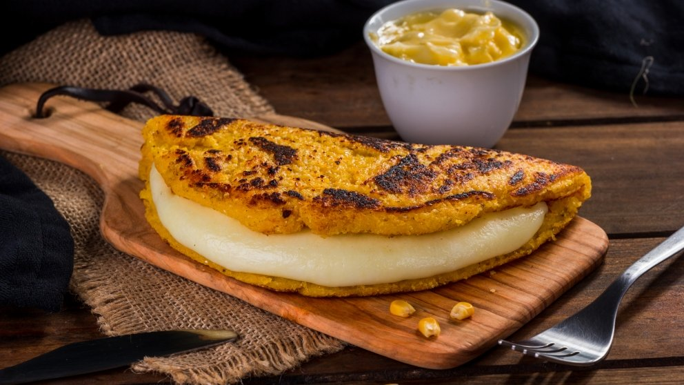
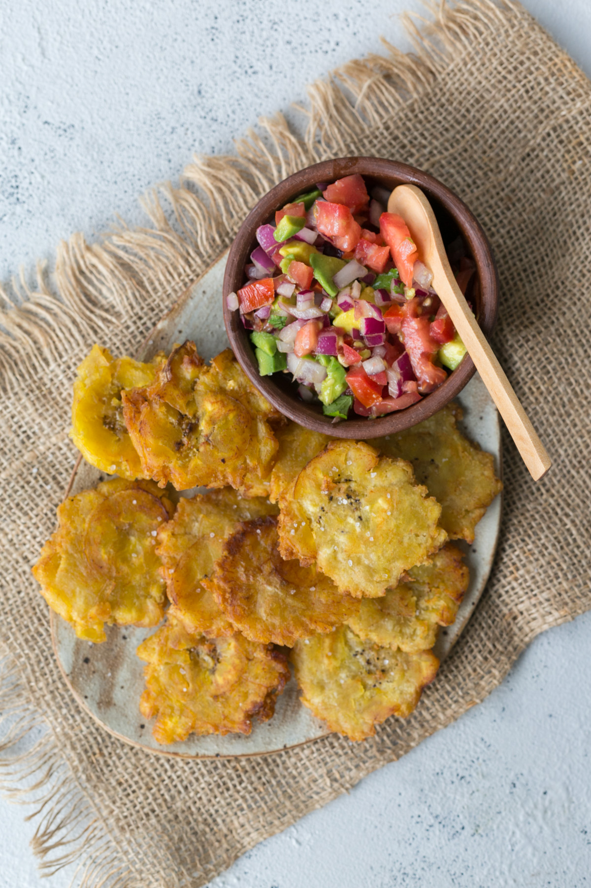

Cachapas
Ingredientes
- 4 cups of fresh corn kernels (about 6 ears of corn)
- 1/2 cup of heavy cream
- 1/4 cup of skim milk
- 1 tablespoon of sugar
- 1/2 teaspoon of salt
- 1/2 cup of arepa corn flour (I used Harina P.A.N.)
- Butter
- 2 8-ounce disk of queso de mano

Tostones or Patacones
Ingredientes
- 5 tablespoons oil for frying
- 1 green plantain
- 3 cups cold water
- salt to taste